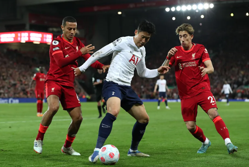
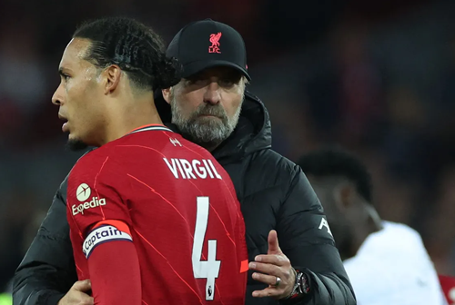
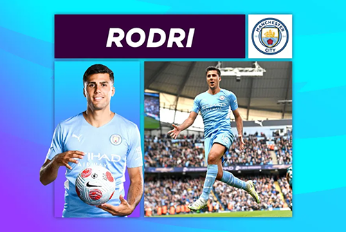
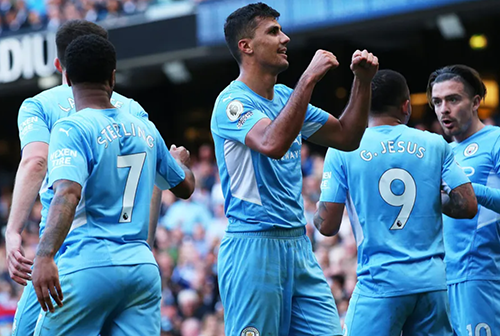
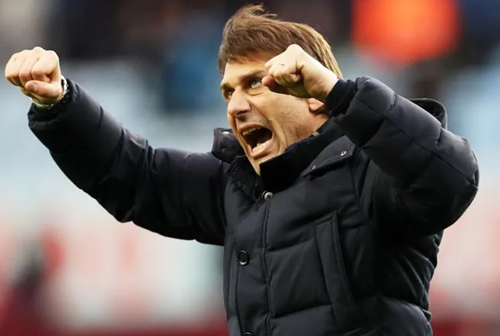
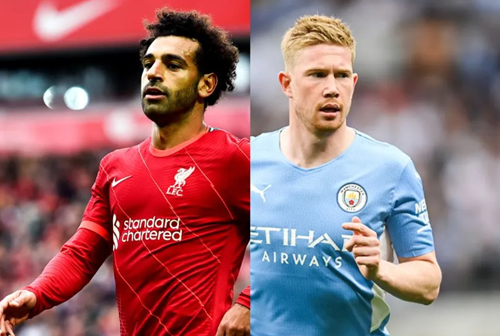
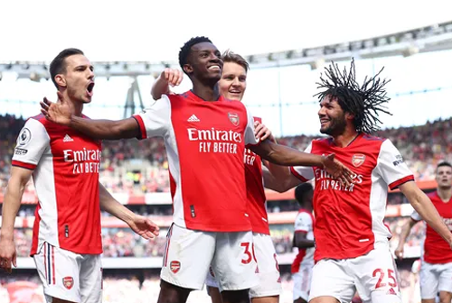
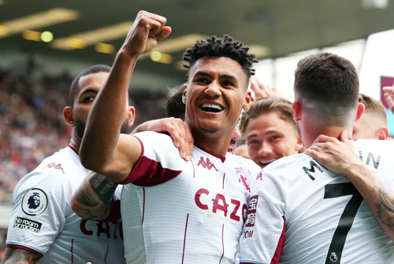

Advantage Man City after Liverpool draw with Spurs
Liverpool battled back to earn a point and return to the top of the table, but their 1-1 draw with Tottenham Hotspur on Saturday has handed Manchester City the opportunity to strengthen their position in the Premier League title race.
Luis Diaz brought Liverpool level with a 74th-minute strike after Son Heung-min's 20th goal of the season had threatened to earn Spurs a surprise away victory.
Liverpool are in first place on goal difference but Man City will now be looking to take full advantage of the Reds' setback by overcoming Newcastle United on Sunday and moving three points clear at the top with three matches remaining.
Spurs produced a determined performance at Anfield and will be disappointed that they were unable to hold on for the win that would have lifted them above Arsenal into fourth place.
The Gunners can move four points clear of their north London rivals, whom they visit on Thursday night, with a home victory over Leeds United on Sunday.

Spurs dent Liverpool's title bid in Anfield draw
Luis Diaz’s second-half equaliser returned Liverpool to the top of the table but the Reds dropped points in their Premier League title bid following a 1-1 draw with Tottenham Hotspur at Anfield.
Both sides hit the woodwork in the first half as Virgil van Dijk saw his header come off the crossbar on 39 minutes before Pierre-Emile Hojbjerg struck the outside of a post with a low shot for Spurs.
Son Heung-min put Spurs ahead on 56 minutes with his 20th league goal of the season, turning in Ryan Sessegnon’s pass following some excellent approach play from Harry Kane.
Diaz’s long-range, deflected shot drew Liverpool level on 74 minutes to set up a tense finish, but after Mohamed Salah had curled a shot wide and Hojbjerg had mis-directed a header late on, both defences held firm.
After dropping points at home for the first time since October, Liverpool are top with 83 points. They lead Man City, who host Newcastle United on Sunday, on goal difference.
Spurs stay fifth on 62 points, one behind Arsenal who play Leeds United on Sunday.

Adrian Clarke says 25-year-old among Premier League's top midfielders ahead of facing Newcastle
Manchester City must swiftly put the disappointment of their UEFA Champions League exit behind them as they refocus on the Premier League title race with the visit of Newcastle United.
Central midfield lynchpin Rodri is the glue that holds Pep Guardiola’s side together, offering the perfect platform for City’s plethora of creators to flourish.
His consistency and smart positional play, coupled with his calm temperament, must come to the fore on Sunday if the leaders are to bounce back in positive fashion.
Winning back possession
Newcastle are not a possession-based side, so they will look to spring turnovers and counter-attacks down the middle, whenever opportunities arise at the Etihad Stadium.
The runs of Joe Willock, Allan Saint-Maximin, Joelinton or Bruno Guimaraes will need to be carefully watched and part of Rodri’s brief will be to cut off those attacks as quickly as possible.
On and off the ball, he has enjoyed a fantastic campaign in the heart of City's midfield and has proved he wins back possession like no one else in the top-flight.
The 25-year-old is in his prime, making more ball recoveries per 1,000 opposition touches than outstanding defensive midfielders such as Fabinho, Declan Rice, Wilfred Ndidi and Kalvin Phillips.
Averaging this metric out for every 1,000 touches that the opposition have in open play, helps compare players from possession-heavy sides like City, with those from more defensive sides to give a truer reflection across the league.

Man City take advantage of Liverpool slip-up
Manchester City took what could be a decisive step towards this year's Premier League title by efficiently dispatching Newcastle United and extending their lead at the top of the table.
With rivals Liverpool dropping points at home to Tottenham Hotspur on Saturday night, Man City capitalised on Sunday afternoon by claiming a 5-0 victory at the Etihad Stadium.
The win, sealed with goals from Raheem Sterling (twice), Aymeric Laporte, Rodri and Phil Foden, means that they are now three points clear of Liverpool with only three matches of a thrilling campaign left to play.
Pep Guardiola's team now travel to Wolverhampton Wanderers on Wednesday night, 24 hours after Liverpool are next in action, against Steven Gerrard's Aston Villa at Villa Park.
Elsewhere on Sunday, Arsenal strengthened their grip on fourth place with a 2-1 victory over 10-man Leeds United.
Two early Eddie Nketiah goals were enough for the Gunners, who held off a late Leeds rally to claim a fourth straight league win.
They now take on fifth-placed Spurs on Thursday night knowing that victory in an eagerly anticipated North London Derby would guarantee fourth place and a place in next season's UEFA Champions League.

Can Conte stay unbeaten at Anfield to dent Liverpool's title bid?
Did you know?
Both of Antonio Conte’s Premier League visits to Liverpool have finished in 1-1 draws. Only four managers have avoided defeat in each of their first three trips to Anfield in the competition: Martin O’Neill, Peter Reid, Roy Hodgson and Paul Lambert.
Liverpool have only lost one of their last 27 Premier League home matches against Tottenham Hotspur (W18 D8), and are unbeaten in their last 10, since a 2-0 loss in May 2011 (W7 D3).
Liverpool versus Spurs is the second highest-scoring fixture in Premier League history (170 goals in 59 meetings), while it’s had more penalties awarded than any other match-up in the competition (23).
Spurs striker Harry Kane has been involved in nine goals in 13 Premier League appearances against Liverpool (seven goals, two assists), with five of these coming in seven matches against them at Anfield (four goals, one assist).

Liverpool and Man City big-hitters are included in best XI filled with players who have two matches
Title rivals Mohamed Salah (£13.3m) and Kevin De Bruyne (£11.9m) have the potential for huge hauls in the biggest Double Gameweek of 2021/22 Fantasy Premier League.
Liverpool’s Salah faces Tottenham Hotspur and Aston Villa, while Manchester City’s De Bruyne is preparing for matches against Newcastle United and Wolverhampton Wanderers.
Crucially, both players were rested in Gameweek 35, which boosts their prospects of back-to-back starts as their clubs battle for the Premier League Trophy.
Salah has produced 10 double-figure hauls this season, more than any other player.
An ownership of 59 per cent means he is expected to continue as the most-selected captain in Fantasy.
However, De Bruyne is in better form, outscoring the Egyptian by 56 points to 35 over their last six matches.
Both line up in a 3-5-2 formation, in a team full of players who have a Double Gameweek 36. Salah has been handed the armband, with De Bruyne given the vice-captaincy.

Nketiah's double strengthens Arsenal's grip on fourth
Eddie Nketiah scored both goals as Arsenal beat 10-man Leeds United 2-1 to strengthen their hopes of finishing in the top four, while also placing their opponents in the bottom three.
Nketiah charged down Illan Meslier to open the scoring on five minutes before he converted a Gabriel Martinelli cutback five minutes later.
A challenge on Martinelli led to Luke Ayling being dismissed on 27 minutes but Diego Llorente finished a flicked-on corner at the back post to give Leeds hope with 24 minutes to play.
Arsenal held on, however, and a fourth straight victory means they stay in fourth on 66 points, four ahead of fifth-placed Tottenham Hotspur whom they meet on Thursday night.
Leeds drop to 18th, level on points with Burnley in 17th, and one behind 16th-placed Everton.

GW36 Lessons: Managers rushing to Watkins for Double
Ollie Watkins (£7.5m) is proving a popular pick for managers on Free Hit chips in Double Gameweek 37 of Fantasy Premier League.
The forward scored his third goal in five matches in Aston Villa’s win at Burnley last weekend, collecting 27 points in that period.
Watkins has earned 22,000+ new owners for Villa's home matches with Crystal Palace and Burnley, the fifth most-bought player in DGW37.
The Free Hit is currently the most active chip, played by 39,000 managers.